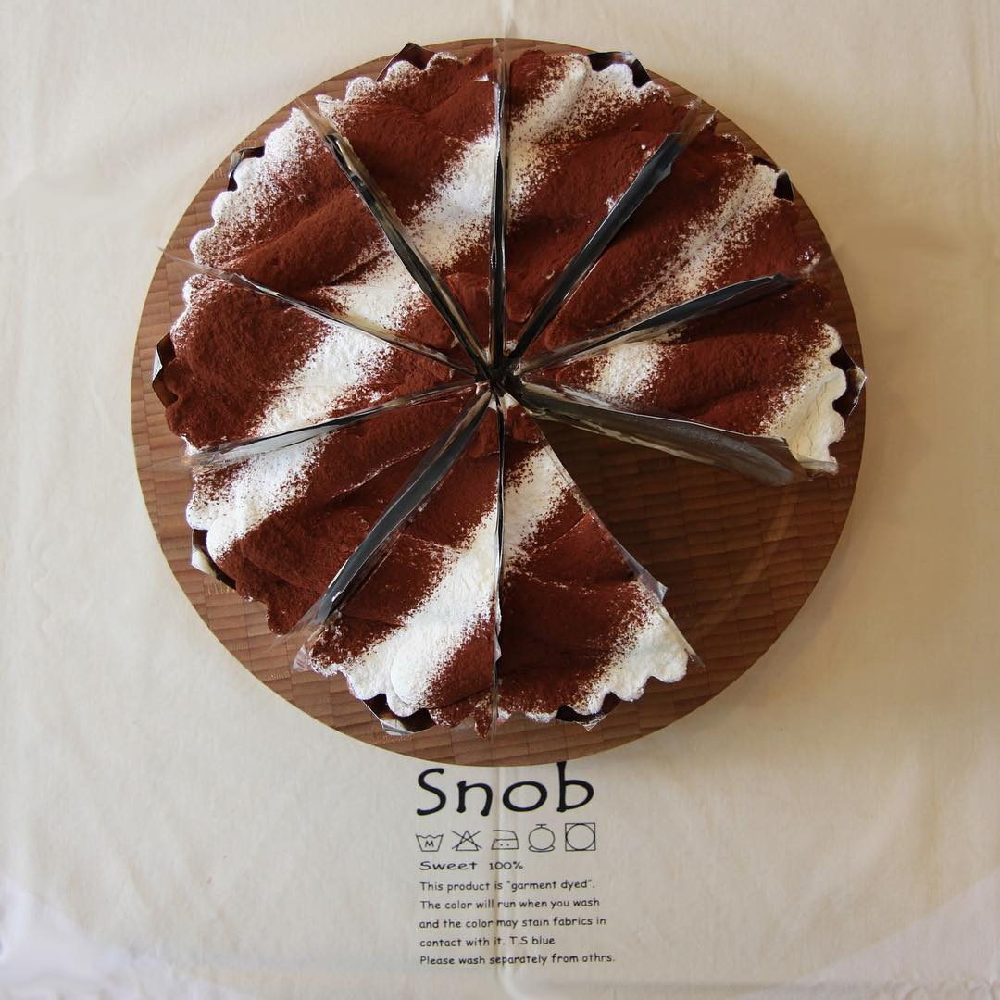

딸기 케이크
12~5월에 나오는 시즌메뉴 입니다. 커스타드와 딸기가 듬뿍 올라가 다른곳보다 더 부드러운 케이크를 입니다.
시트론 케이크
레몬 커스터드가 들어간 시트론 케이크는 상큼한 케이크를 원하시는 분께 추천드립니다.
초코 케이크

진한 다크초코크림이 아닌 적당히 단 밀크 초콜릿으로 만든 초코 케이크입니다.
안에 호두가 들어가니 견과류 알러지가 있으신분은 참고해 주세요!
예약 하실때 견과류는 빼달라고 말씀해 주시면 빼드릴 수 있습니다.
치즈 타르트

끼리 크림치즈를 아낌없이 넣어 가볍지 않고 진한 맛의 치즈맛을 느끼실 수 있습니다.
티라미수 타르트
다른곳과 차원이 다른 진한 커피향의 티라미수를 맛보실 수 있습니다.
계절 과일 타르트

위 참고 사진은 7~8월에 맛보실수 있는 메론 타르트 입니다.
이 메뉴는 계절 과일을 이용한 메뉴라 매달 매뉴가 달라 매장에 직접 전화하거나 인스타를 확인하고 예약해주셨으면 좋겠습니다.